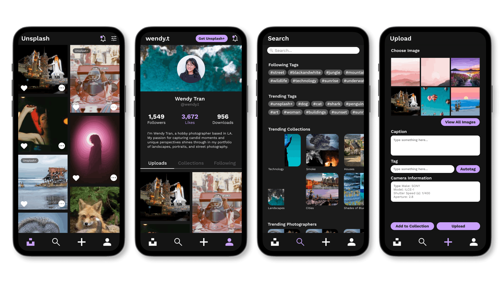
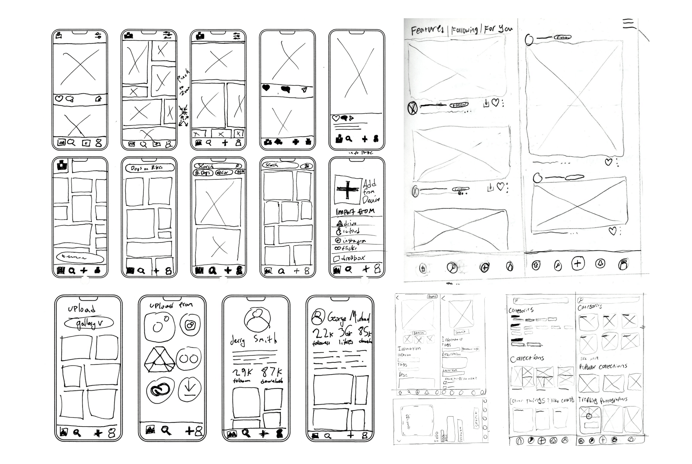

Unsplash
Team
A collaborative UX redesign of the Unsplash app — focused on adding social features, improving navigation, and creating a more connected community for photographers.
View the full case study here

Unsplash is a free stock photography platform used by millions of creators worldwide. Working as part of a four-person team, I led the design of the Profiles and Unsplash+ sections while also serving as the team's primary Figma resource — supporting all sections of the project with component building, prototyping, and file organization.
My role touched every part of the app in some capacity, from setting up the shared design system to helping teammates execute their screens in Figma. The result was a cohesive redesign that felt like one unified product rather than four separate pieces.
The Problem
Unsplash has something most stock photo platforms lack: a genuine community of photographers who care deeply about their craft. But the app experience didn't reflect that. Our audit uncovered four recurring issues: limited privacy controls, a navigation structure that overwhelmed users instead of guiding them, a lack of personal identity tied to users and their work, and no compelling reason to choose Unsplash over competitors like Pexels or Adobe Stock.
Together, these problems pointed to a larger issue. The experience was built around the transaction of uploading and downloading images rather than the people behind them. Users had little reason to stay engaged, few opportunities to connect with others, and no real sense that their presence on the platform mattered.
Research
We began by benchmarking Unsplash against its closest competitors: Adobe Stock, Shutterstock, Pexels, Flickr, and Freepik. One pattern emerged immediately: every platform that retained active users had invested heavily in social features. Following, commenting, collections, community — the most-used stock photo apps weren't just repositories, they were destinations. Unsplash had none of that infrastructure.
The implication was clear: most Unsplash users only opened the app when they had something to upload or download. There was nothing pulling them back in between. Our redesign would need to change that equation.
User surveys confirmed the benchmarking findings and added detail. The Unsplash audience skewed toward engaged, creative users who cared about photography as a practice — not just a transaction. They wanted to follow photographers they admired, get feedback on their work, and feel like part of a community. The app gave them no way to do any of that.


Wireframes

Prototyping